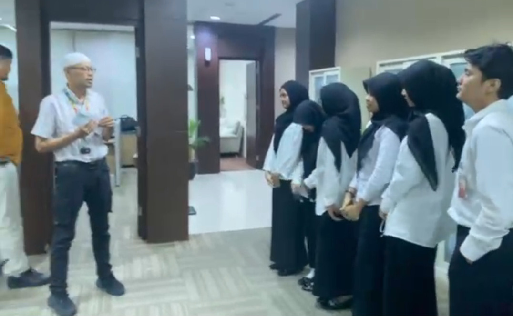
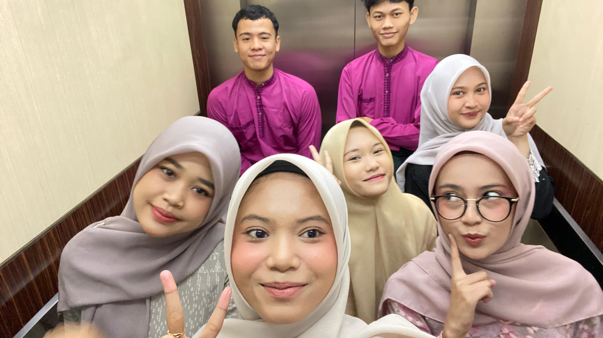
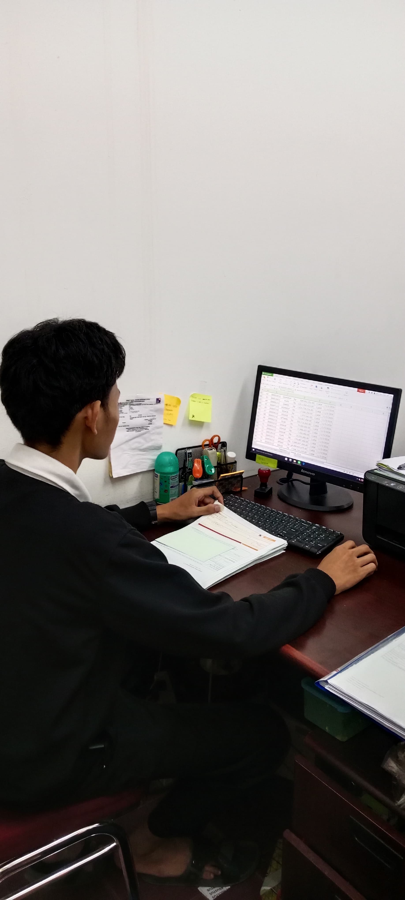

Penerimaan & Penyerahan
Proses pengantaran oleh pihak sekolah ke Bank Riau Kepri Syariah dan penyerahan siswa PKL secara resmi kepada pembimbing industri.
Visualisasi kegiatan saat magang di BRKSyariah
Proses pengantaran oleh pihak sekolah ke Bank Riau Kepri Syariah dan penyerahan siswa PKL secara resmi kepada pembimbing industri.

Pembagian unit kerja berdasarkan kompetensi. Saya ditempatkan pada bagian Operasional Kasda (Kas Daerah) yang berlokasi di lingkungan BPKAD.

Mengenal staf staf BPKAD dan tim Teller Bank, mempelajari SOP kerahasiaan data, serta observasi awal alur dokumen negara (SP2D).

Mulai bertanggung jawab penuh dalam verifikasi pajak, koordinasi digital via foto berkas, dan memastikan validitas data sebelum diproses teller.

Rutin melakukan input data 'Posted' ke Microsoft Excel untuk menyeimbangkan saldo harian antara fisik berkas dengan sistem Bank.

Tahap akhir kearsipan dokumen, perapian database rekonsiliasi, dan penyerahan draf laporan PKL sebelum masa magang sesi pertama berakhir.